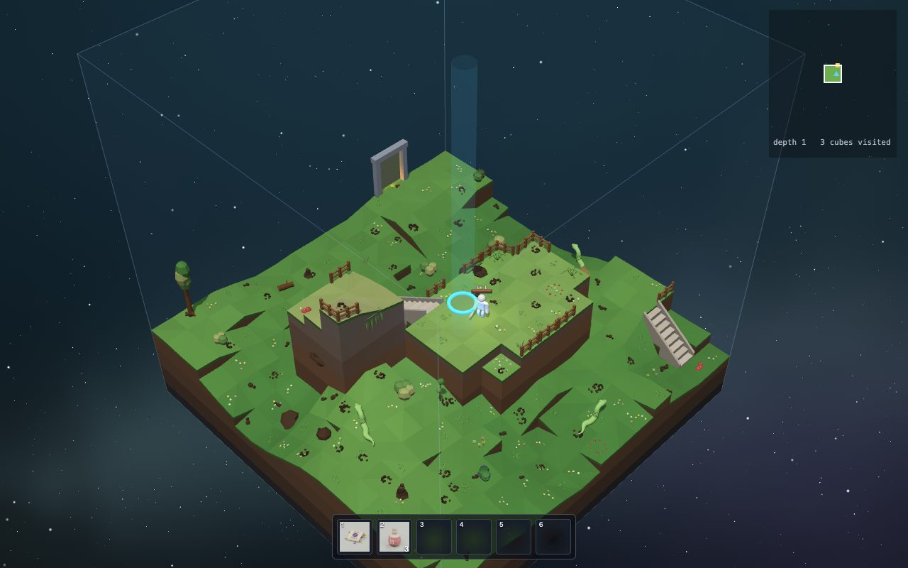
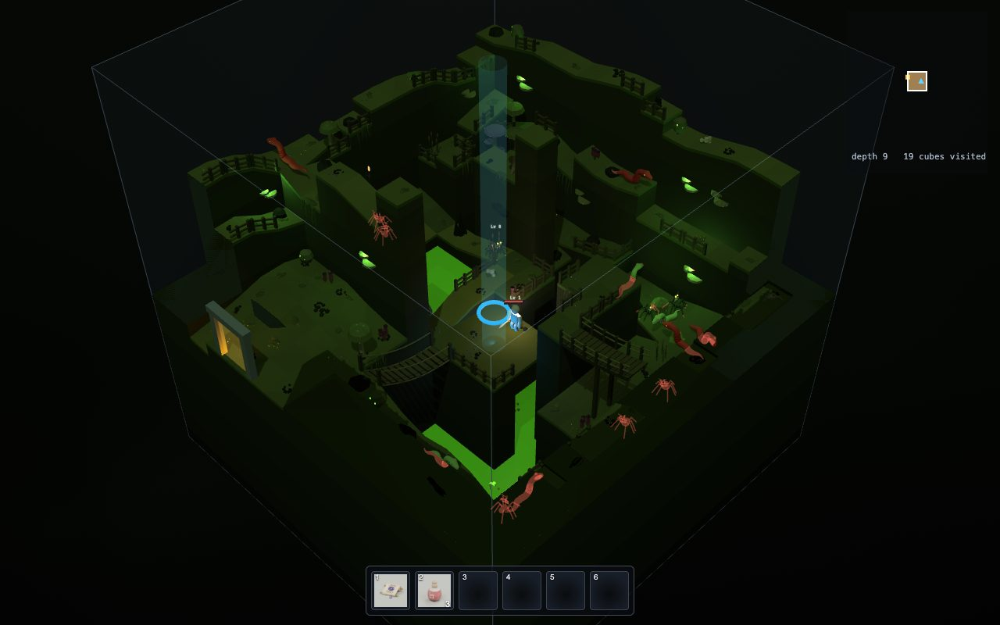
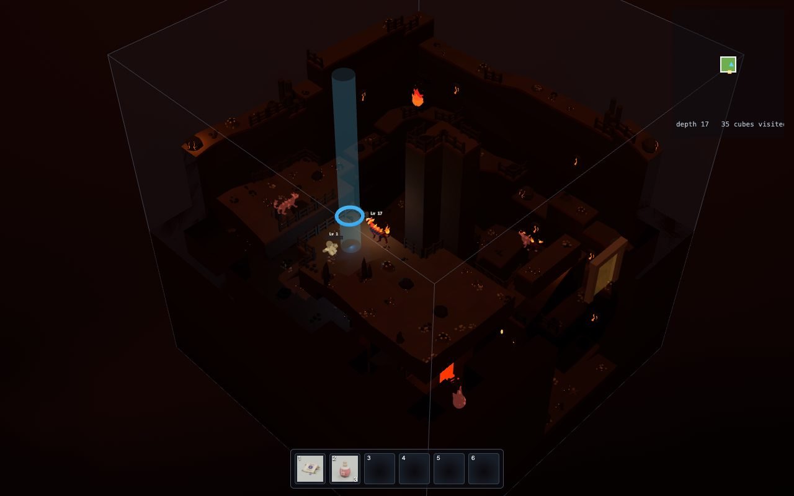

Welcome, game maker!
Willkommen, Spielemacher!
In Cube Crawler you are a small hero who climbs down through a world of floating cubes.
In Cube Crawler bist du ein kleiner Held, der durch eine Welt aus schwebenden Würfeln nach unten klettert.
You start in a cosy town at the top, where you can even walk into some of the houses. Every cube is a room. Somewhere in each floor there is a well that takes you one floor deeper. There are 21 floors, called depths. At the very bottom, at depth 20, is the core.
Du fängst in einer gemütlichen Stadt ganz oben an, in der du sogar in ein paar Häuser hineingehen kannst. Jeder Würfel ist ein Raum. Irgendwo auf jedem Stockwerk gibt es einen Brunnen, der dich ein Stockwerk tiefer bringt. Es gibt 21 Stockwerke, die Tiefen heißen. Ganz unten, in Tiefe 20, liegt der Kern.
On the way there are snakes, spiders, flaming cats, treasure chests and magic swords.
Unterwegs gibt es Schlangen, Spinnen, brennende Katzen, Schatztruhen und magische Schwerter.
In this guide you look inside the game, to see how all of that is made.
In diesem Führer schaust du ins Innere des Spiels und siehst, wie das alles gemacht ist.

A game is a program
Ein Spiel ist ein Programm
A program is a list of instructions that a computer follows. Exactly. Every time. It never guesses what you meant.
Ein Programm ist eine Liste von Anweisungen, die ein Computer befolgt. Ganz genau. Jedes Mal. Er rät nie, was du gemeint hast.
A game is a special kind of program. It does three things, over and over, very fast:
Ein Spiel ist eine besondere Art von Programm. Es macht immer wieder drei Dinge, sehr schnell:
- Listen: which keys are pressed? Where did you click?
- Hören: Welche Tasten sind gedrückt? Wo hast du geklickt?
- Think: move the hero, let the monsters decide what to do, check if a sword hit something.
- Denken: den Helden bewegen, die Monster entscheiden lassen, was sie tun, prüfen, ob ein Schwert etwas getroffen hat.
- Draw: paint a new picture of everything on the screen.
- Malen: ein neues Bild von allem auf dem Bildschirm malen.
That happens about 60 times every second, so it looks like a movie that you can steer.
Das passiert ungefähr 60-mal pro Sekunde. Darum sieht es aus wie ein Film, den du steuern kannst.
See the heartbeat of the game Sieh dir den Herzschlag des Spiels anThink of a recipe
Denk an ein Rezept
A recipe says: "Crack two eggs. Stir. Heat the pan." If you follow it exactly, you get pancakes.
Ein Rezept sagt: "Schlag zwei Eier auf. Rühr um. Mach die Pfanne heiß." Wenn du es genau befolgst, bekommst du Pfannkuchen.
Code is the same, but the cook is very fast and very literal. If the recipe says "add 100 eggs", it adds 100 eggs.
Code ist genauso, nur ist der Koch sehr schnell und nimmt alles wörtlich. Wenn im Rezept "nimm 100 Eier" steht, nimmt er 100 Eier.
That is why games need careful instructions, and also why they need checks (more about those later).
Darum brauchen Spiele sorgfältige Anweisungen, und auch Prüfungen (dazu später mehr).
What the game is made of
Woraus das Spiel besteht
The game lives in a folder with a few big parts. You can think of them as the buildings in the town:
Das Spiel liegt in einem Ordner mit ein paar großen Teilen. Du kannst sie dir wie die Gebäude in der Stadt vorstellen:
src/ the brain
src/ das Gehirn
All the code: rules, world building, monsters, drawing. About 200 small files, some 14,000 lines.
Der ganze Code: Regeln, Weltbau, Monster, Malen. Etwa 200 kleine Dateien, rund 14.000 Zeilen.
assets/ the storeroom
assets/ das Lager
3D models (the hero, monsters, swords, houses) and little pictures of items.
3D-Modelle (der Held, Monster, Schwerter, Häuser) und kleine Bilder von Gegenständen.
blender/ the workshop
blender/ die Werkstatt
Scripts that build the models in a 3D program called Blender, then put them in the storeroom.
Skripte, die die Modelle in einem 3D-Programm namens Blender bauen und dann ins Lager legen.
music/ the band
music/ die Band
13 songs, written as text files. The game plays them with a tiny synthesizer.
13 Lieder, als Textdateien geschrieben. Das Spiel spielt sie mit einem winzigen Synthesizer.
tests/ the inspectors
tests/ die Prüfer
Over 20 files of checks that make sure the rules still work after every change.
Über 20 Dateien mit Prüfungen, die nach jeder Änderung kontrollieren, dass die Regeln noch stimmen.
docs/ the library
docs/ die Bibliothek
Notes that explain how everything works (for grown-ups, and for AI helpers). This guide is the kids' version.
Notizen, die erklären, wie alles funktioniert (für Erwachsene und für KI-Helfer). Dieser Führer ist die Version für Kinder.
A world made of cubes
Eine Welt aus Würfeln
Every cube is a room of 16 by 16 squares, called cells. A cube can have several floors stacked on top of each other, with stairs, ladders and bridges between them. Each depth has its own look, its own monsters and its own song.
Jeder Würfel ist ein Raum aus 16 mal 16 Feldern, die Zellen heißen. Ein Würfel kann mehrere Stockwerke übereinander haben, mit Treppen, Leitern und Brücken dazwischen. Jede Tiefe hat ihr eigenes Aussehen, ihre eigenen Monster und ihr eigenes Lied.



Here is the amazing part: nobody drew these cubes. The game invents every single one while you play. Two players can get completely different worlds.
Und jetzt kommt das Erstaunliche: Niemand hat diese Würfel gezeichnet. Das Spiel erfindet jeden einzelnen, während du spielst. Zwei Spieler können völlig verschiedene Welten bekommen.
How the world gets invented Wie die Welt erfunden wirdInside the brain: many small files
Im Gehirn: viele kleine Dateien
Big programs are split into small files, each with one job. A file can import things from another file, like borrowing a tool from a neighbour.
Große Programme werden in kleine Dateien aufgeteilt, jede mit einer Aufgabe. Eine Datei kann Dinge aus einer anderen importieren, so wie man sich beim Nachbarn ein Werkzeug leiht.
| FOLDER | ORDNER | WHAT LIVES THERE | WAS DORT WOHNT | A FILE TO PEEK AT | EINE DATEI ZUM REINSCHAUEN |
|---|---|---|---|---|---|
src/core/ | The rules and numbers: how much a sword hurts, how strong a spider is, what an item is. | Die Regeln und Zahlen: wie sehr ein Schwert wehtut, wie stark eine Spinne ist, was ein Gegenstand ist. | src/core/constants.js | ||
src/world/ | The big plan of the world: which cubes exist and how they connect. | Der große Plan der Welt: welche Würfel es gibt und wie sie verbunden sind. | src/world/layout.js | ||
src/cubegen/ | The cube factory: turns a plan into one cube with hills, rivers, stairs and bridges. | Die Würfelfabrik: macht aus einem Plan einen Würfel mit Hügeln, Flüssen, Treppen und Brücken. | src/cubegen/index.js | ||
src/physics/ | Walking, jumping, falling, bumping into walls. | Gehen, Springen, Fallen, gegen Wände stoßen. | src/physics/move.js | ||
src/game/ | What happens while you play: the hero, the monsters, portals, the inventory. | Was beim Spielen passiert: der Held, die Monster, Portale, das Inventar. | src/game/update.js | ||
src/render/ | Drawing everything in 3D. | Alles in 3D malen. | src/render/scene.js | ||
src/audio/ | Sound effects and music. | Geräusche und Musik. | src/audio/sfx.js | ||
src/themes/ | The look of each depth: colours, light, which song plays. | Das Aussehen jeder Tiefe: Farben, Licht, welches Lied spielt. | src/themes/index.js |
Rules and pictures are kept apart
Regeln und Bilder sind getrennt
One of the smartest ideas in this game: the rules do not know anything about the pictures.
Eine der klügsten Ideen in diesem Spiel: Die Regeln wissen nichts über die Bilder.
The file src/core/combat.js decides if your sword hits a spider and how much it hurts. It is just math.
A different file, src/game/juice.js, adds the sparks, the damage number and the "thwack" sound.
Die Datei src/core/combat.js entscheidet, ob dein Schwert eine Spinne trifft und wie sehr es wehtut. Das ist nur Mathe.
Eine andere Datei, src/game/juice.js, fügt die Funken, die Schadenszahl und das "Zack"-Geräusch hinzu.
Why is that smart?
Warum ist das klug?
- The rules can be tested without a screen. A test can check "does the Old Sword need two hits for a spider?" in a split second.
- Die Regeln kann man testen, ganz ohne Bildschirm. Ein Test kann in einem Sekundenbruchteil prüfen: "Braucht das Alte Schwert zwei Treffer für eine Spinne?"
- You can change how things look without breaking how they work.
- Du kannst ändern, wie Dinge aussehen, ohne kaputt zu machen, wie sie funktionieren.
- The world builder can run in the background, without drawing anything.
- Der Weltbauer kann im Hintergrund laufen, ohne etwas zu malen.
That is the first line of the "juice" file. It promises: you could delete all the sparks and the game would still play the same.
Das ist die erste Zeile der "Juice"-Datei. Sie verspricht: Man könnte alle Funken löschen, und das Spiel würde sich genauso spielen.
Swords & fighting Schwerter & KämpfeHow it runs in your browser
Wie es in deinem Browser läuft
The game is a web page. Your browser already knows how to run JavaScript, so there is nothing to install for players.
Das Spiel ist eine Webseite. Dein Browser kann schon JavaScript ausführen, also müssen Spieler nichts installieren.
- The browser opens
index.html. - Der Browser öffnet
index.html. - That page loads
src/main.js, which loads the files it needs, which load the files they need. - Diese Seite lädt
src/main.js, das die Dateien lädt, die es braucht, die wiederum die Dateien laden, die sie brauchen. - A helper library called three.js knows how to draw 3D with the graphics card.
- Eine Hilfsbibliothek namens three.js weiß, wie man mit der Grafikkarte 3D malt.
- A worker invents cubes in the background, so the game never freezes while it thinks.
- Ein Worker erfindet im Hintergrund Würfel, damit das Spiel nie einfriert, während es nachdenkt.
Try it yourself
Probier es selbst
To run the game on your own computer, open a terminal in the game folder and type:
Um das Spiel auf deinem eigenen Computer zu starten, öffne ein Terminal im Spielordner und tippe:
npm run serveThen open http://localhost:8000. Some secret switches go after a ? in the address:
Dann öffne http://localhost:8000. Ein paar geheime Schalter kommen hinter ein ? in der Adresse:
The real code: where it all starts
Der echte Code: wo alles anfängt
// Entry point: load the first cube and run the frame loop.
import { renderer, scene, camera } from './render/scene.js';
import { loadCube } from './game/flow.js';
import { updatePlayer } from './game/update.js';
import { updateEnemies } from './game/enemies.js';
// ... about 50 more imports ...
function frame() {
// ... listen, think, draw (see the next room) ...
renderer.render(scene, camera);
requestAnimationFrame(frame);
}
loadCube();
setStatus('Welcome to town. Follow the path through the grove to leave.');
frame();import lines borrow functions from other files. ./render/scene.js means "the file scene.js in the folder render next to me".
import-Zeilen leihen sich Funktionen aus anderen Dateien. ./render/scene.js heißt: "die Datei scene.js im Ordner render neben mir".
function frame() is the heartbeat. At the end it asks the browser: "call frame again before the next picture". That is how it runs forever.
function frame() ist der Herzschlag. Am Ende bittet sie den Browser: "Ruf frame vor dem nächsten Bild nochmal auf." So läuft sie für immer.
The last three lines run once: load the town cube, show the welcome message, start the heartbeat.
Die letzten drei Zeilen laufen nur einmal: den Stadtwürfel laden, die Begrüßung zeigen, den Herzschlag starten.
The whole frame function, explained Die ganze frame-Funktion, erklärtHow to use this guide
So benutzt du diesen Führer
- Move with ← → or the slots at the bottom (like the game's quick bar).
- The tag in the corner of each slide shows its level: Lv 1 big idea, Lv 2 how it works, Lv 3 real code. Use the Lv buttons at the top to hide the deeper ones.
- Blue dive deeper buttons take you to a more detailed slide. Gold portals take you to another room.
- Press S to read a room as one long page instead.
- Blättere mit ← → oder mit den Feldern unten (wie die Schnellleiste im Spiel).
- Das Schild in der Ecke jeder Folie zeigt ihre Stufe: Lv 1 große Idee, Lv 2 so funktioniert es, Lv 3 echter Code. Mit den Lv-Knöpfen oben kannst du die tieferen ausblenden.
- Blaue tiefer tauchen-Knöpfe bringen dich zu einer genaueren Folie. Goldene Portale bringen dich in einen anderen Raum.
- Drück S, um einen Raum als eine lange Seite zu lesen.
- Mit EN oben rechts liest du alles auf Englisch.
- Boxes marked TRY IT are things to play with. When they say REAL GAME CODE, they run the actual code of the game, right here on the page.
- Kästen mit AUSPROBIEREN sind zum Spielen. Wenn dort ECHTER SPIELCODE steht, läuft der echte Code des Spiels, direkt hier auf der Seite.
- Point at dotted words to see what they mean.
- Zeig auf gepunktete Wörter, um zu sehen, was sie bedeuten.
- Every room ends with prompt quests: things you can ask an AI helper to change in the game.
- Jeder Raum endet mit Prompt-Aufgaben: Dinge, die du einen KI-Helfer im Spiel ändern lassen kannst.
Prompt quests: Town
Prompt-Aufgaben: Stadt
An AI coding agent can read all the game's files, change them and run the tests. You tell it what you want, in plain words. That message is called a prompt. Try these (copy them with the button):
Ein KI-Coding-Agent kann alle Dateien des Spiels lesen, sie ändern und die Tests laufen lassen. Du sagst ihm in ganz normalen Worten, was du willst. Diese Nachricht heißt Prompt. Probier diese hier (kopier sie mit dem Knopf). Du kannst Agenten auf Deutsch schreiben:
Give me a short tour of this project. What are the main folders and what is each one for? Keep it simple, I am new to coding. Gib mir eine kurze Führung durch dieses Projekt. Was sind die wichtigsten Ordner und wofür ist jeder da? Halte es einfach, ich bin neu beim Programmieren.Asking the agent to explain things first is always a good start. Den Agenten erst erklären zu lassen, ist immer ein guter Anfang.Change the welcome message that appears when the game starts to say "Welcome, brave crawler! The well is waiting." Show me which file you changed. Ändere die Begrüßung, die beim Start des Spiels erscheint, in "Willkommen, mutiger Crawler! Der Brunnen wartet." Zeig mir, welche Datei du geändert hast.Asking "show me" helps you learn where things live. "Zeig mir" hilft dir zu lernen, wo die Dinge wohnen.Where in the code is it decided how many depths the world has? Explain it to me, but do not change anything yet. Wo im Code wird entschieden, wie viele Tiefen die Welt hat? Erklär es mir, aber ändere noch nichts."Do not change anything yet" lets you look before you leap. "Ändere noch nichts" lässt dich erst schauen, bevor du springst.